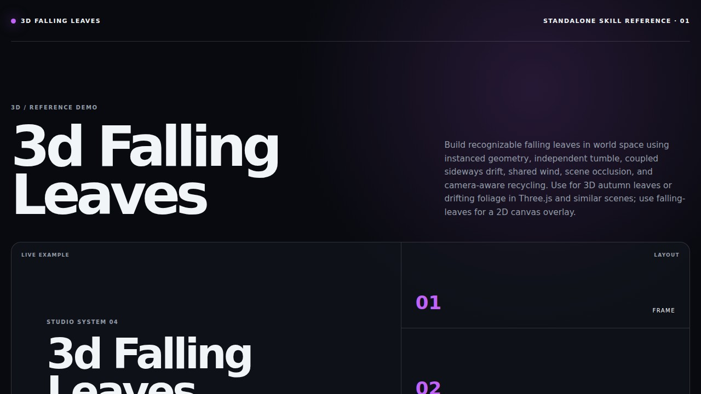

3DLocal demo
3D Falling Leaves
$3d-falling-leavesBuild recognizable falling leaves in world space using instanced geometry, independent tumble, coupled sideways drift, shared wind, scene occlusion, and camera-aware recycling. Use for 3D autumn leaves or drifting foliage in Three.js and similar scenes; use falling-leaves for a 2D canvas overlay.